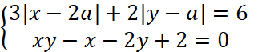

Задание:
Система  имеет три решения, найти а.
Первое уравнение – ромб, второе – две прямые.
Существует два случая, когда система может иметь три решения.
Во-первых, если верхняя (или нижняя) вершина находится на прямой y=1, то a=4 или a=-2. Центр ромба удалён на 6 от прямой x=2, поэтому у прямой x=2 нет пересечения с ромбом. В случае, когда правая (или левая) вершина лежит на прямой x=2, происходит следующее: a=2 или a=0, а центр ромба на 1 удалён от прямой y=1, а прямая y=1 пересекает ромб в двух точках.
Во-вторых, точка пересечения прямых не должна совпасть с вершиной ромба, то есть a≠1, x=2, y=1.